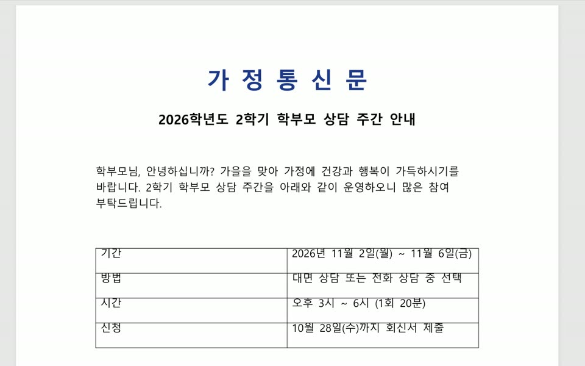

무료 오픈소스 두 개를 깔면, 파일을 사이트에 올리지 않고 끌다가 키 하나만 눌러서 바꿀 수 있어요. DragShift는 Shift, Filee는 Ctrl이라 둘 다 깔아도 안 부딪혀요. 결과는 원본 옆에 새 파일로 생기고 원본은 그대로예요.
아래 'DragShift 받기' 주소에서 DragShift-Setup.exe를 받아 실행하세요(내 계정에만 설치, 관리자 권한 없이 돼요). 설치 없이 쓰려면 DragShift.exe만 받아 실행해도 돼요. 실행하면 작업 표시줄 오른쪽 아이콘 칸에 들어가 있어요. 맥은 아래 '맥 설치' 한 줄을 터미널에 붙여 넣으세요.
탐색기나 바탕화면에서 파일을 끌기 시작한 다음 Shift를 한 번 누르세요. 커서 아래에 원형 메뉴가 떠요. 원하는 형식(PNG·PDF·HEIC 등) 위에 놓으면 끝이에요. Shift를 한 번 더 누르면 압축·크기 바꾸기·자르기·합치기 같은 '도구' 쪽으로 바뀌어요.
합칠 PDF를 모두 고른 다음(첫 파일 클릭 → Shift 누른 채 마지막 파일 클릭) 그중 하나를 끌다가 Shift 두 번 → MERGE에 놓으세요. 끝나면 오른쪽 아래 알림에 쪽수와 용량이 나오고, 잘못했으면 'Undo'로 되돌릴 수 있어요.
아래 'Filee 받기' 주소에서 Filee-버전-win-Setup.exe를 받아 실행하세요. 설치 없이 쓰려면 win-Portable.zip을 풀고 Filee.exe를 실행하면 돼요. 처음에 '변환 엔진 선택' 창이 뜨는데, 문서·사진·HWP는 엔진 없이 되니 그냥 넘어가도 돼요.
Ctrl을 먼저 누른 채로 파일을 끌기 시작하세요(맥은 Option). 그 자리에 형식 도넛이 열리고, 끌고 있는 파일에 맞는 형식만 보여요. PDF 위에 놓으면 진행률이 돌고 원본 옆에 PDF가 생겨요. 도넛이 열린 상태에서 Tab이나 마우스 휠을 돌리면 덜 쓰는 형식이 나와요.

윈도우 — Setup.exe 또는 DragShift.exe
https://github.com/llamaboi55/DragShift/releases/latest
맥 터미널에 한 줄 (보안 경고 없이 응용 프로그램에 설치)
curl -fsSL https://raw.githubusercontent.com/llamaboi55/DragShift/main/install-mac.sh | bash
윈도우 — win-Setup.exe 또는 win-Portable.zip
https://github.com/KnifeLemon/Filee/releases/latest
도움이 되셨다면
@ai.antenna.kr
에서 바로 쓰는 AI 활용법을 계속 올립니다.